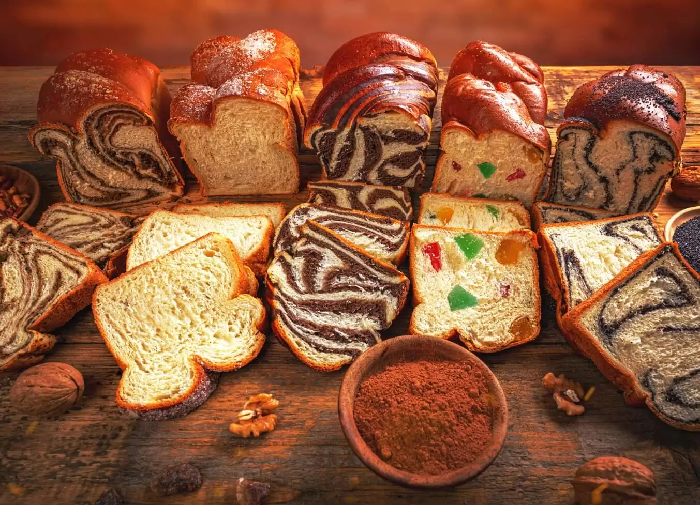
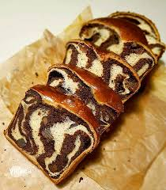

In unserer Familie feiern wir Weihnachten nicht besonders aufwendig, aber wir genießen trotzdem traditionelle Gerichte.
Hier sind eine meiner Lieblingsgericht aus Rumänien:
Lieblingsgerichte

Cozonac
Zutaten:
- 1 kg Mehl (Typ 000)
- 50 g frische Hefe oder 14 g Trockenhefe
- 350 ml (max. 400 ml) warme Milch
- 250 g Zucker
- 4 Eier
- 150 ml Öl oder 100 ml Öl und 100 g geschmolzene Butter
- 3 Päckchen Vanillezucker oder 2 Teelöffel Vanilleextrakt oder das Mark einer Vanilleschote
- Geriebene Schale von 2 Zitronen und 1 Orange
- 10-12 g Salz (abgewogen!)
Füllung:

- 300 g bunter Rahat (orientalisches Gelee)
- 150 g Walnüsse
- 100 g Zucker
- 50 g Kakao
Zusätzlich:
.jpeg)
- 1 Eigelb
- 50 ml Milch
Die Rezept:
- Milch vorbereiten:
- 400 ml Milch leicht erwärmen (350 ml für den Teig, 50 ml Reserve).
-
Zutaten vorbereiten:
- Eier auf Zimmertemperatur bringen
- Mehl (weiß, Typ 000) sieben
- Zitrusfruchtschale abreiben (2 Zitronen, 1 Orange)
- Walnüsse rösten und mahlen
- Hefe ansetzen:
- Hefe mit 1 TL Zucker, 100 ml warmer Milch und etwas Mehl mischen, 10 Minuten gehen lassen.
-
Teig kneten:
- Eier, Zucker und Vanille 5 Minuten schaumig schlagen.
- Hefe, Milch, Zitrusschale und 500 g Mehl einarbeiten.
- Restliches Mehl und Salz dazugeben, 10 Minuten kneten und 10 Minuten ruhen lassen.
- Öl (oder Butter-Öl-Mischung) schrittweise einkneten (20 Minuten).
- Teig elastisch, glatt und nicht klebrig machen.
- Teig gehen lassen:
- Teig mit Öl formen, abdecken und 30-40 Minuten in einem warmen Ofen gehen lassen.
-
Teig formen:
- Teig entgasen (falten und ruhen lassen).
- In 500 g Portionen teilen, Kugeln formen und erneut ruhen lassen.
- Füllung:
- Kakao, Zucker und gemahlene Walnüsse mischen. Nach Wunsch mit Milch oder Eiweiß anfeuchten.
- Rollen und flechten:
- Rechtecke ausrollen, Füllung verteilen, aufrollen und flechten.
- Zweites Gehen:
- Zöpfe in Formen legen, 1,5 Stunden gehen lassen.
-
Backen:
- Mit Eigelb-Milch-Mischung bestreichen.
- 20 Minuten bei 180 °C, dann 20-25 Minuten bei 170 °C backen.
- Abkühlen:
- 5 Minuten in der Form, dann auf ein Gitter legen. Warm drehen, damit sie ihre Form behalten.
Fertig – genießen! 😊
Links zu anderen Rezepten
Schau dir diese Rezepte von meinen Mitschülern an: